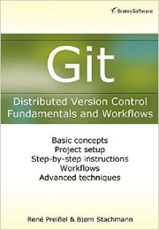

<!---------------- SLIDE -------------- -->

<section data-markdown><script type="text/template">
  <aside class="notes">
  Erläuterungen
  </aside>

Fazit
======

</script></section>


<!---------------- SLIDE -------------- -->

<section data-markdown><script type="text/template">
  <aside class="notes">
  Erläuterungen
  </aside>

 * Git ist **Mainstream** geworden.
 * Der **Admistrationsaufwand** ist gering.
 * **Abhängigkeiten** werden extern verwaltet z. B. Maven, Gradle oder Package-Manager
 * Wo **Berechtigungen** erforderlich sind, wird dies über **Pull-Requests** abgewickelt.
 * Gebaut wird mit **Jenkins**.
 * **Staging-Branches** werden benötigt, wo die Release-Zyklen lang sind.
 * Viele **advanced Features** von Git werden kaum genutzt.
 * Es gibt **wenige Probleme** beim Einsatz von Git.

</script></section>


<!---------------- SLIDE -------------- -->

<section data-markdown><script type="text/template">
  <aside class="notes">
  Erläuterungen
  </aside>

http://kapitel26.github.io/

Bjørn Stachmann [@old_stachi](https://twitter.com/old_stachi), René Preißel [rp@eToSquare.de](mailto:rp@eToSquare.de)

  

# Alles wird Git!

</script></section>
